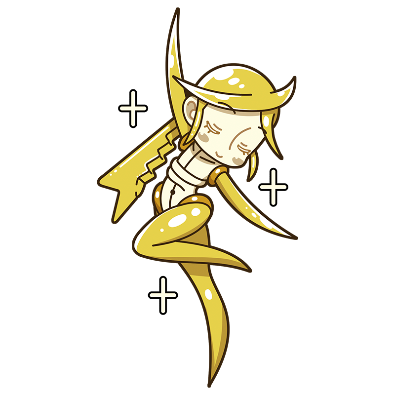

Shiny, shiny, shiny~! Doesn't it look
just like an angel? Isn't it lovely?
Brancusi
After Everything Else Is Stripped Away,
Only True Beauty Remains
A Muse based on the Romanian sculptor Constantin Brâncuși. She takes pride in her smooth, elegant form, refined by stripping away everything unnecessary, yet she's surprisingly playful once you get to know her. Although she's very much a living being, her sleek appearance often gets her mistaken for a robot.
Style
Hometown
Romania
Classics
- "Bird in Space"
- "A Muse"
- "The Kiss" etc.
This is the Brancusi piece!
Bird in Space
A sculpture that removes every unnecessary detail from the form of a bird in flight, leaving behind only the essence of "flying." Though technically a figurative sculpture, its highly simplified form makes it appear almost abstract. Combined with its gleaming golden surface, it gives off an almost mystical presence. Its minimalist shape was so unconventional that it was once mistaken for a machine part. Several versions of the work were produced in different materials and sizes.
Year
1923-1940
Medium
Bronze
Dimension
Height approximately 150 cm
Collection
Philadelphia Museum of Art
（USA), etc.
Who is Brancusi?
Constantin Brâncuşi
Known as the "Father of Modern Sculpture," Constantin Brâncuși was a Romanian sculptor who worked mainly in Paris. By reducing his subjects to their essential forms, he helped redefine modern sculpture. His work was considered so radical that some pieces were mistaken for industrial products rather than works of art, and were even confiscated by customs. Today, he is recognized as one of the pioneers of twentieth-century sculpture. His reconstructed studio can be visited at the Centre Pompidou in Paris.
Full Name
Constantin Brâncuși
Born
February 19, 1876
Died
March 16, 1957(aged 81)